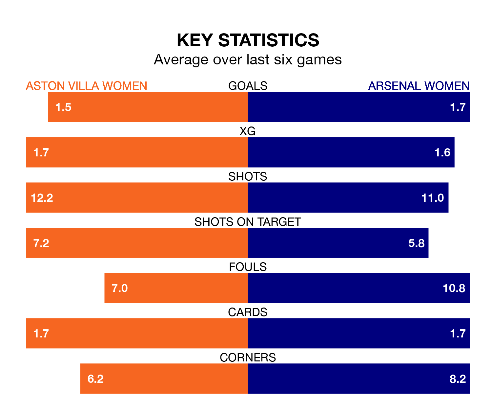

Arsenal Women travel to the Poundland Bescot Stadium for Sunday's late match against Aston Villa Women looking to bounce back from defeat last time out in the FA Women's Super League.
The Gunners, who sit third in the league after 16 games, fell to a 3-1 away defeat to Chelsea Women on March 15.
They face an Aston Villa side who picked up a win in their last match, a 2-1 victory against Everton Women, and who sit seventh in the table.
With 34 goals in 16 games so far this season, Arsenal are the league's joint-third-highest scorers with 2.1 goals per game. And they are conceding fewer than average, letting in 17 goals at a rate of 1.1 per game.
Aston Villa, meanwhile, are below average scorers, with 1.3 goals per game, compared to a league average of 1.7. They have conceded 2.0 goals per game.
In the last 10 years, Aston Villa and Arsenal have played each other on nine occasions. Aston Villa won one of them, Arsenal seven, and they drew once.
On average, the Villa scored 0.4 goals and the Gunners 3.1 in those matches.
Their last meeting was on March 6, when Arsenal won 4-0 at home.
In Manuela Zinsberger, the Gunners can rely on one of the league's safest pair of hands. She has kept four clean sheets in her 14 appearances this season, and only two other 'keepers – Manchester City Women's Khiara Keating and Manchester United Women's Mary Earps – have been able to prevent the opposition scoring on more occasions in the FA Women's Super League.
In the Villa's net, Daphne van Domselaar has two clean sheets in 14 games. She has conceded a goal every 45 minutes, twice as often as the 90 minutes between goals for Zinsberger.
The home team are in mixed form in the FA Women's Super League, with three wins and a draw from their last six games.
With four wins and two losses over that period, the visitors' form is slightly better – they have taken 12 points from 18, compared to Aston Villa's 10.
Updated: 10:19 (UTC), 22/03/24